relevant options
giotto.plot_img_max_sample)
giotto.plot_point_raster1 Dataset explanation
This tutorial walks through the visualization capabilities of {Giotto}. The clustering and dimension reduction methods focused on within the dimension reduction tutorial will be revisited and utilized to create heatmaps, violin plots, and visualizations that are unique to Giotto: spatial maps and networks.
This tutorial uses a merFISH dataset of mouse hypothalamic preoptic regions from Moffitt et al.. A complete walkthrough of that dataset can be found here. To download the data used to create the Giotto Object below, please ensure that wget is installed locally.
2 Start Giotto
# Ensure Giotto Suite is installed
if(!"Giotto" %in% installed.packages()) {
pak::pkg_install("giotto-suite/Giotto")
}
# Ensure Giotto Data is installed
if(!"GiottoData" %in% installed.packages()) {
pak::pkg_install("giotto-suite/GiottoData")
}
# Ensure the Python environment for Giotto has been installed
genv_exists <- Giotto::checkGiottoEnvironment()
if(!genv_exists){
# The following command need only be run once to install the Giotto environment
Giotto::installGiottoEnvironment()
}3 Create a Giotto object
library(Giotto)
# Specify path from which data may be retrieved/stored
data_path <- "/path/to/data/"
# Specify path to which results may be saved
results_folder <- "/path/to/results/"
# Optional: Specify a path to a Python executable within a conda or miniconda
# environment. If set to NULL (default), the Python executable within the previously
# installed Giotto environment will be used.
python_path <- NULL # alternatively, "/local/python/path/python" if desired.
# Get the dataset
GiottoData::getSpatialDataset(dataset = "merfish_preoptic",
directory = data_path,
method = "wget")
### Giotto instructions and data preparation
instructions <- createGiottoInstructions(save_dir = results_folder,
save_plot = TRUE,
show_plot = FALSE,
return_plot = FALSE,
python_path = python_path)
# Create file paths to feed data into Giotto object
expr_path <- file.path(data_path, "merFISH_3D_data_expression.txt.gz")
loc_path <- file.path(data_path, "merFISH_3D_data_cell_locations.txt")
meta_path <- file.path(data_path, "merFISH_3D_metadata.txt")
### Create Giotto object
testobj <- createGiottoObject(expression = expr_path,
spatial_locs = loc_path,
instructions = instructions)
# Add additional metadata
metadata <- data.table::fread(meta_path)
testobj <- addCellMetadata(testobj,
new_metadata = metadata$layer_ID,
vector_name = "layer_ID")
testobj <- addCellMetadata(testobj,
new_metadata = metadata$orig_cell_types,
vector_name = "orig_cell_types")
### Process the Giotto Object
# Note that for the purposes of this tutorial, the entire dataset will be visualized.
# Thus, filter parameters are set to 0, so as to not remove any cells.
# Note that since adjustment is not required, adjust_params is set to NULL.
testobj <- processGiotto(testobj,
filter_params = list(expression_threshold = 0,
feat_det_in_min_cells = 0,
min_det_feats_per_cell = 0),
norm_params = list(norm_methods = "standard",
scale_feats = TRUE,
scalefactor = 1000),
stat_params = list(expression_values = "normalized"),
adjust_params = NULL)4 Visualize the Dataset
This dataset includes eight sequential slices. As such it can be visualized both in 2D and 3D.
In 2D:
spatPlot(gobject = testobj,
point_size = 1.5)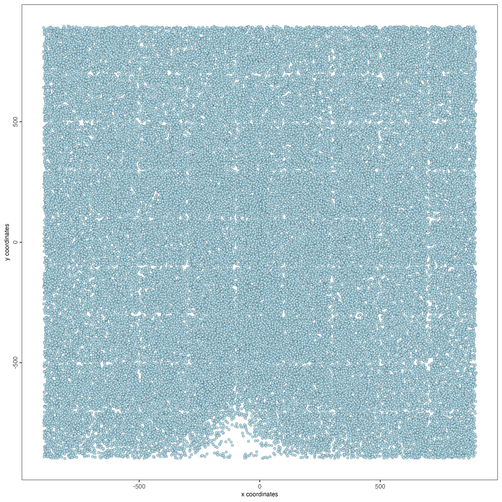
In 3D:
spatPlot3D(gobject = testobj,
point_size = 1,
axis_scale = "real")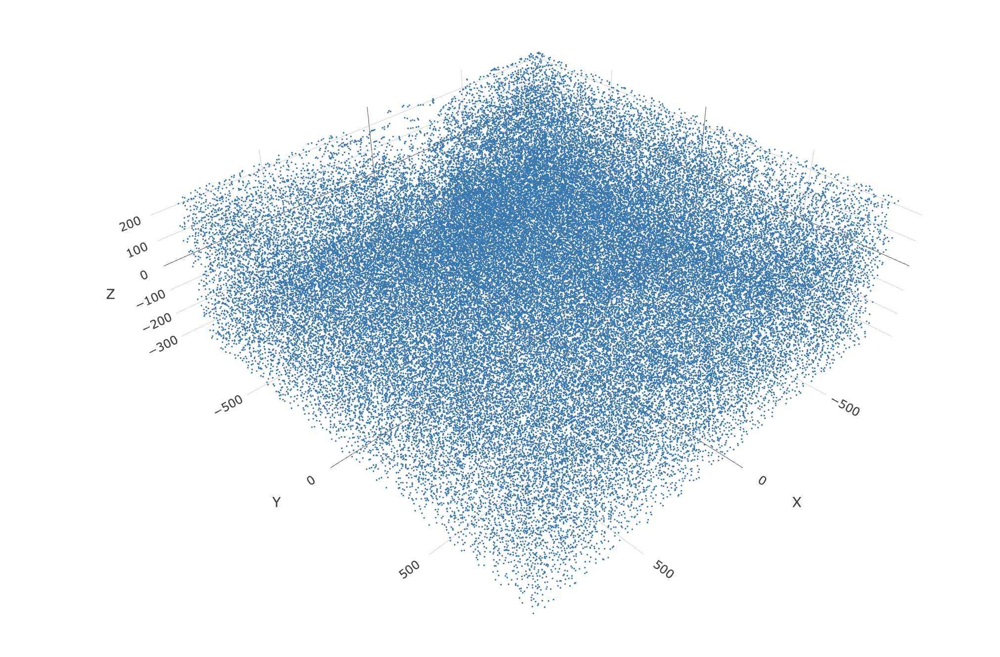
5 Create and Visualize Clusters
First, run a PCA on the data. For the purposes of this tutorial, no highly variable genes will be identified or used in the reduction for simplicity. The data will simply undergo a dimension reduction through PCA. Then, run a UMAP on the data for pre-clustering visualization. The UMAP may also be plotted in 2D and 3D.
# Run PCA
testobj <- runPCA(gobject = testobj,
feats_to_use = NULL,
scale_unit = FALSE,
center = TRUE)
# Run UMAP
testobj <- runUMAP(gobject = testobj,
dimensions_to_use = 1:8,
n_components = 3,
n_threads = 4)
# Plot UMAP in 2D
plotUMAP_2D(gobject = testobj,
point_size = 1.5) 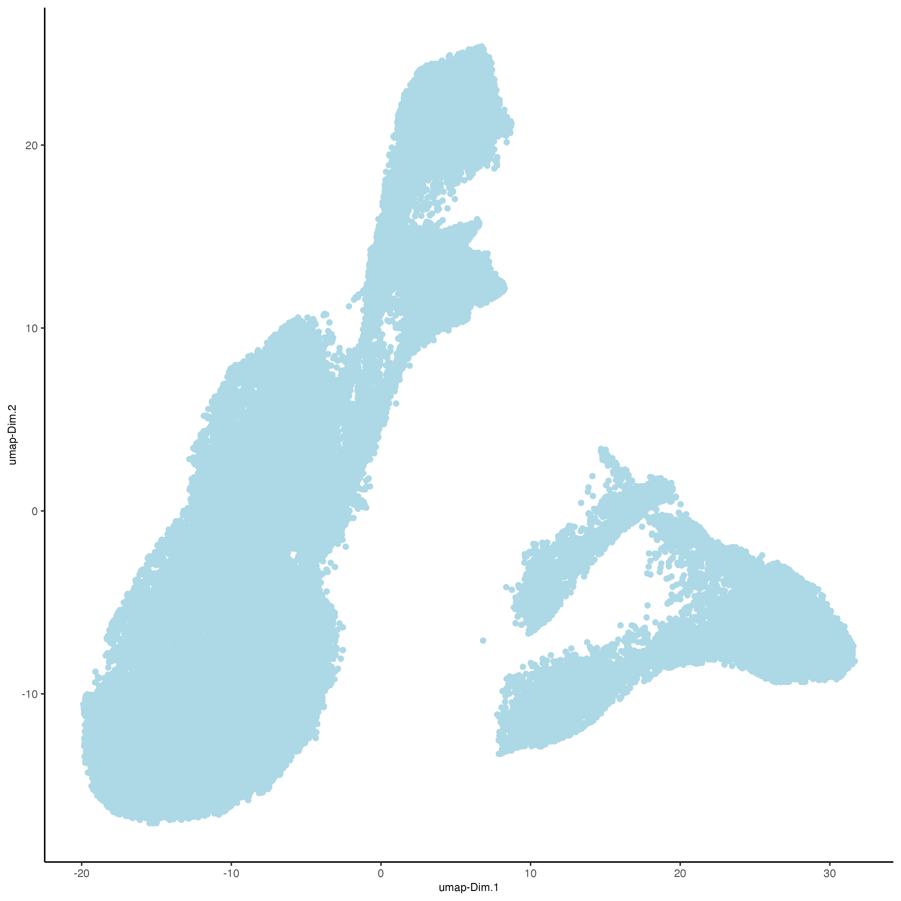
# Plot UMAP 3D
plotUMAP_3D(gobject = testobj,
point_size = 1.5) 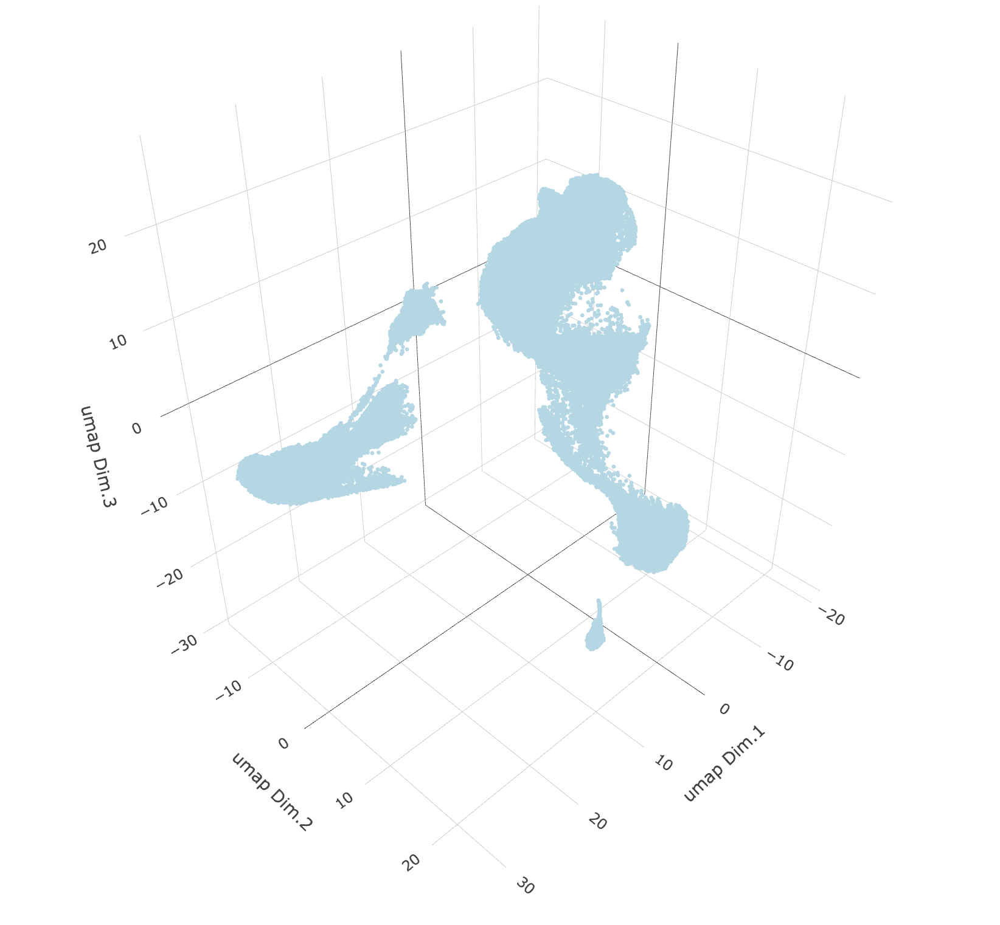
Now, the data may be clustered. Create a nearest network, and then create Leiden clusters. The clusters may be visualized in 2D or 3D, as well as upon the UMAP and within the tissue.
# Create a k Nearest Network for clustering
testobj <- createNearestNetwork(gobject = testobj,
dimensions_to_use = 1:8,
k = 10)
# Preform Leiden clustering
testobj <- doLeidenCluster(gobject = testobj,
resolution = 0.25,
n_iterations = 200,
name = "leiden_0.25.200")
# Plot the clusters upon the UMAP
plotUMAP_3D(gobject = testobj,
cell_color = "leiden_0.25.200",
point_size = 1.5,
show_center_label = FALSE,
save_param = list(save_name = "leiden_0.25.200_UMAP_3D"))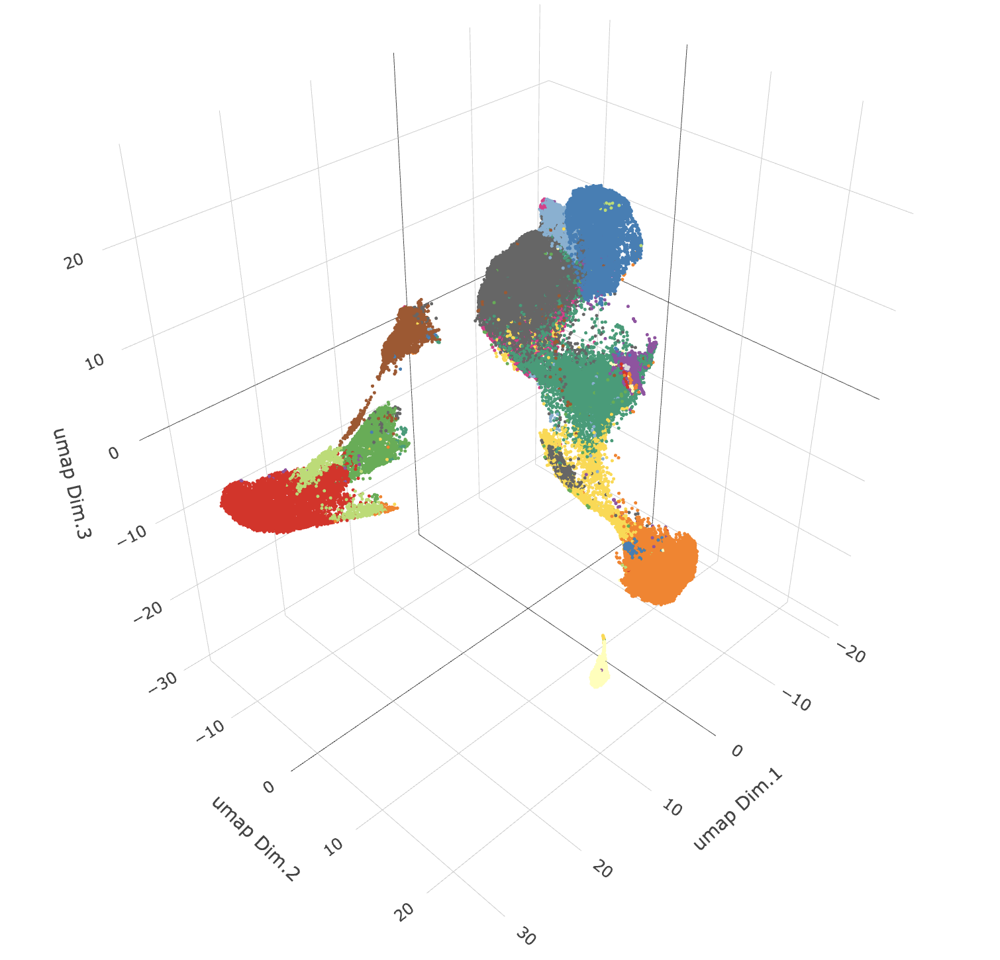
Visualize Leiden clusters within the tissue by creating a Spatial Plot, grouping by layer_ID.
spatPlot2D(gobject = testobj,
point_size = 1.0,
cell_color = "leiden_0.25.200",
group_by = "layer_ID",
cow_n_col = 2,
group_by_subset = c(260, 160, 60, -40, -140, -240))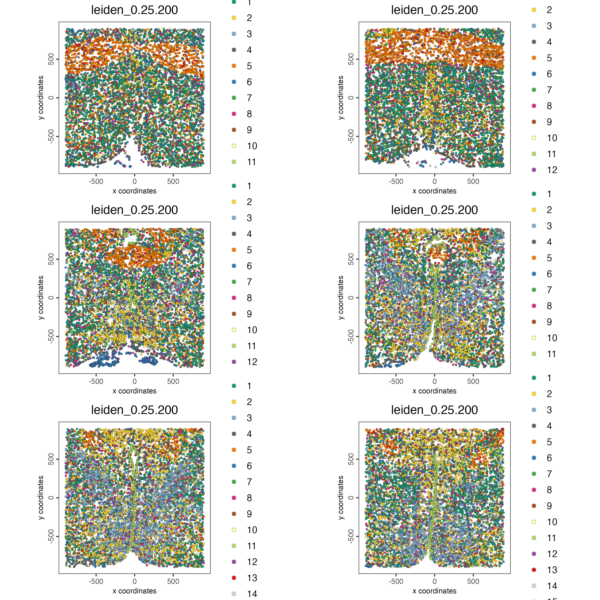
Visualize expression levels within the tissue by creating a Spatial Plot, grouping by layer_ID, and specifying cell_color as the number of features detected per cell.
# Plot cell_color as a representation of the number of features/ cell ("nr_feats")
spatPlot2D(gobject = testobj,
point_size = 1.5,
cell_color = "nr_feats",
color_as_factor = FALSE,
group_by = "layer_ID",
cow_n_col = 2,
group_by_subset = c(260, 160, 60, -40, -140, -240))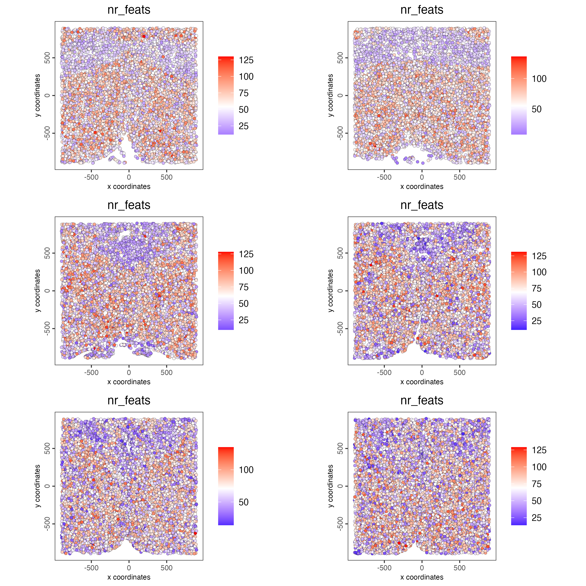
6 Compare Clusters
We can compare clusters using a heatmap:
showClusterHeatmap(gobject = testobj,
cluster_column = "leiden_0.25.200",
save_plot = TRUE)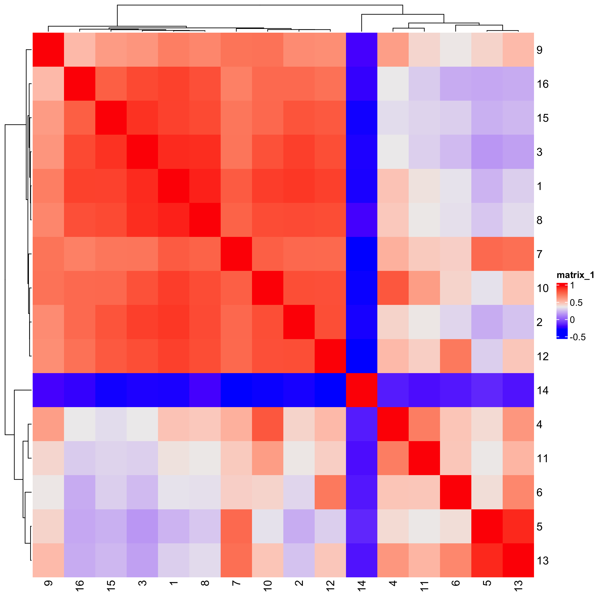
We can plot a dendogram to explore cluster similarity:
showClusterDendrogram(testobj,
h = 0.5,
rotate = TRUE,
cluster_column = "leiden_0.25.200")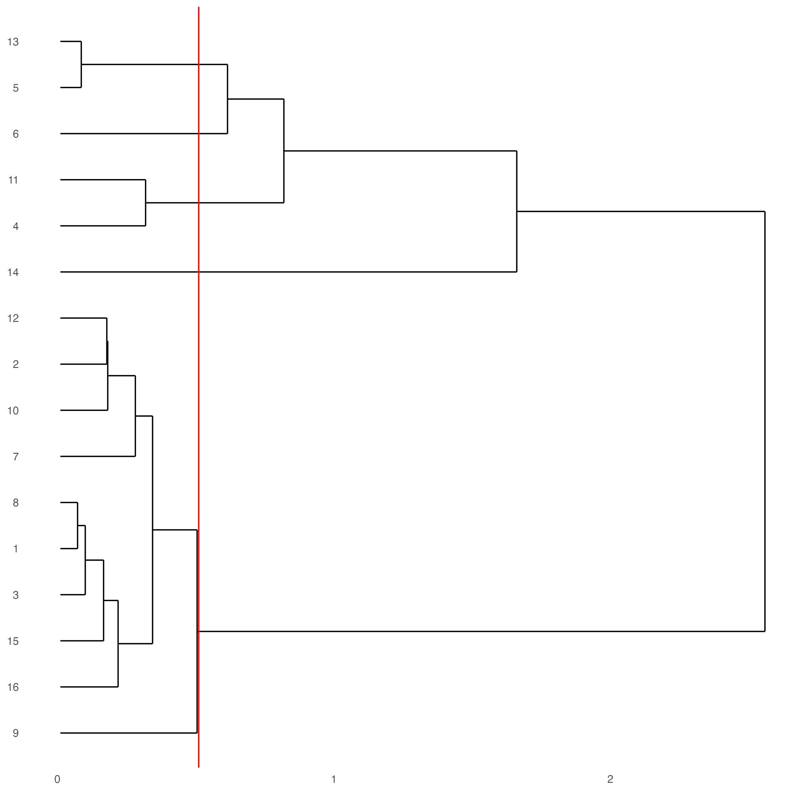
7 Visualize Cell markers_gini
Marker features may be identified by calling findmarkers_gini_one_vs_all. This function detects differentially expressed features by comparing a single cluster to all others. Currently, three methods are supported: “scran”, “gini”, and “mast”. Here, the “gini” method is employed; details on the gini method may be found here.
markers_gini <- findMarkers_one_vs_all(gobject = testobj,
method = "gini",
expression_values = "normalized",
cluster_column = "leiden_0.25.200",
min_feats = 1,
rank_score = 2)Create a violinplot:
violinPlot(testobj,
feats = topgenes_gini,
cluster_column = "leiden_0.25.200",
strip_position = "right")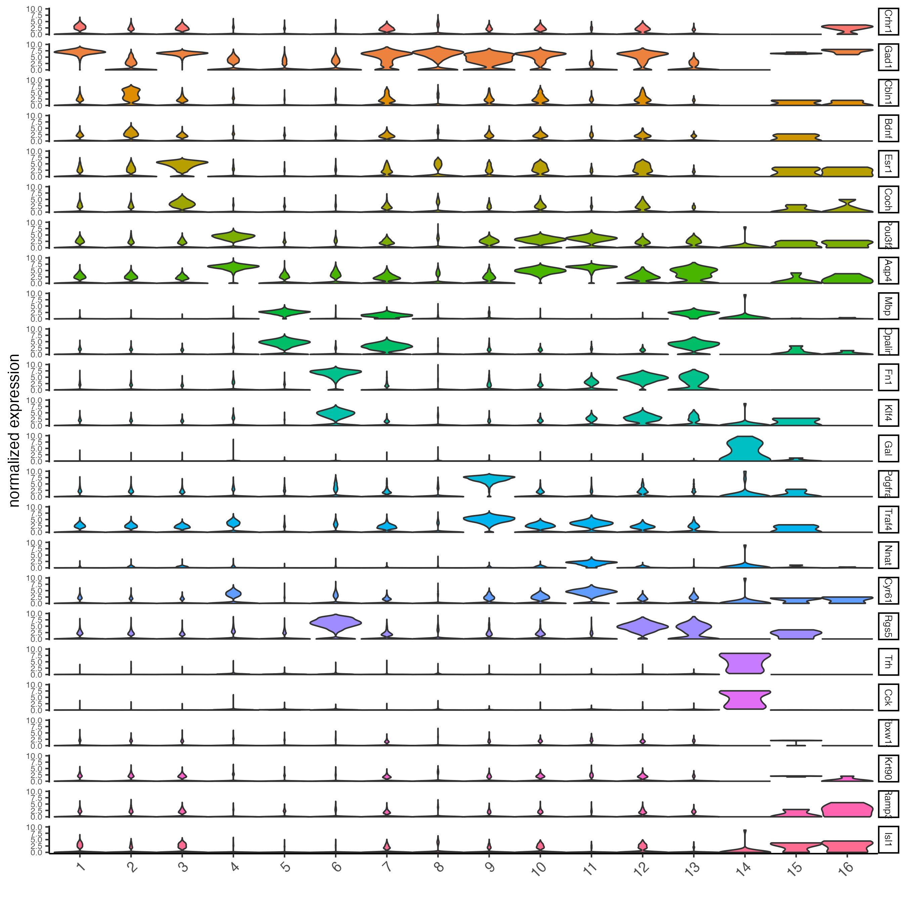
Create a heatmap of top gini genes by cluster:
plotMetaDataHeatmap(testobj,
expression_values = "scaled",
metadata_cols = "leiden_0.25.200",
selected_feats = topgenes_gini)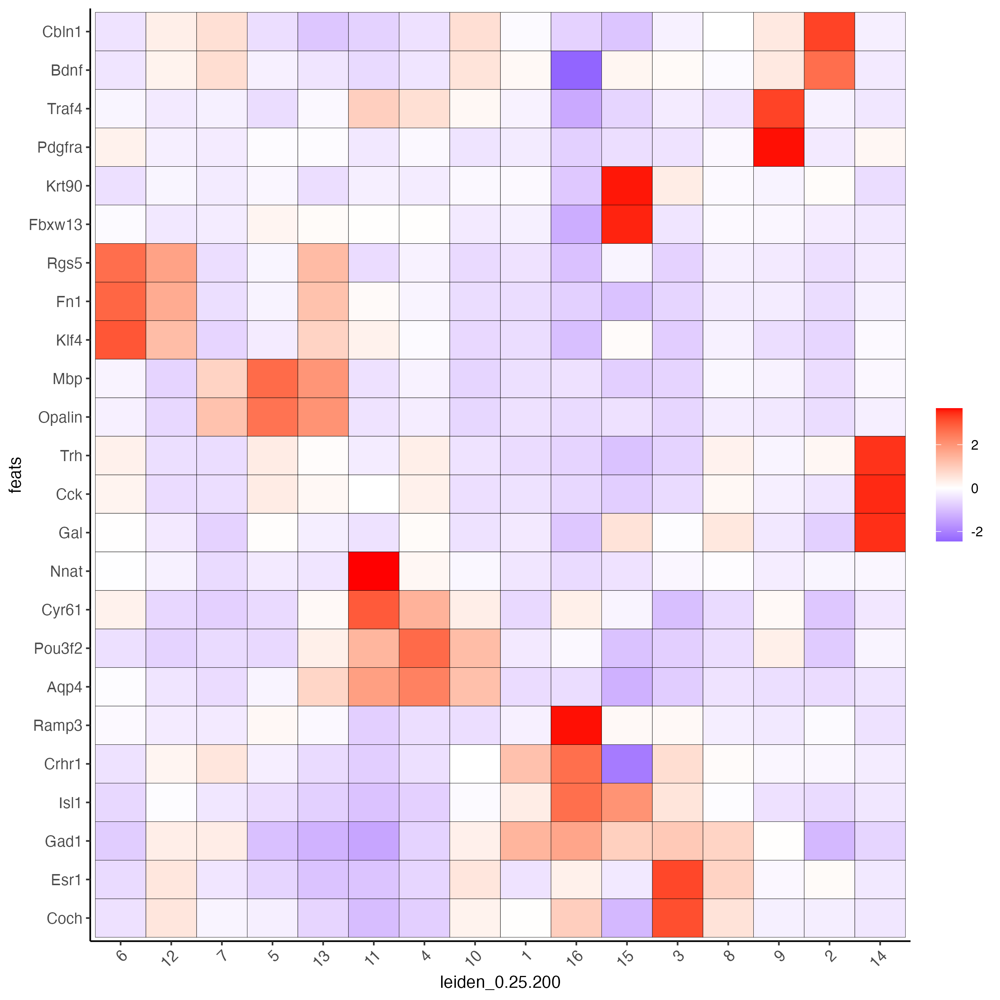
8 Visualize Cell Types in Tissue
To do this, the Leiden clusters must be annotated. Leveraging the provided cell metadata and Giotto Spatial Plots, Leiden clusters may be manually assigned a cell type. Alternative approaches (i.e. in the absence of cell metadata with cell type identification ) could involve the analysis of each cluster for enrichment in cell-specific marker genes.
Since cell type annotations are included within the metadata that was loaded into the Giotto Object, the UMAP may be plotted with cell-type annotations. If cell types are known, Leiden clusters may be manually assigned to a cell type, as will be done here.
# Plot the UMAP, annotated by cell type.
plotUMAP_3D(testobj,
cell_color = "orig_cell_types",
save_param = list(save_name = "Original_Cell_Types_UMAP_3D"))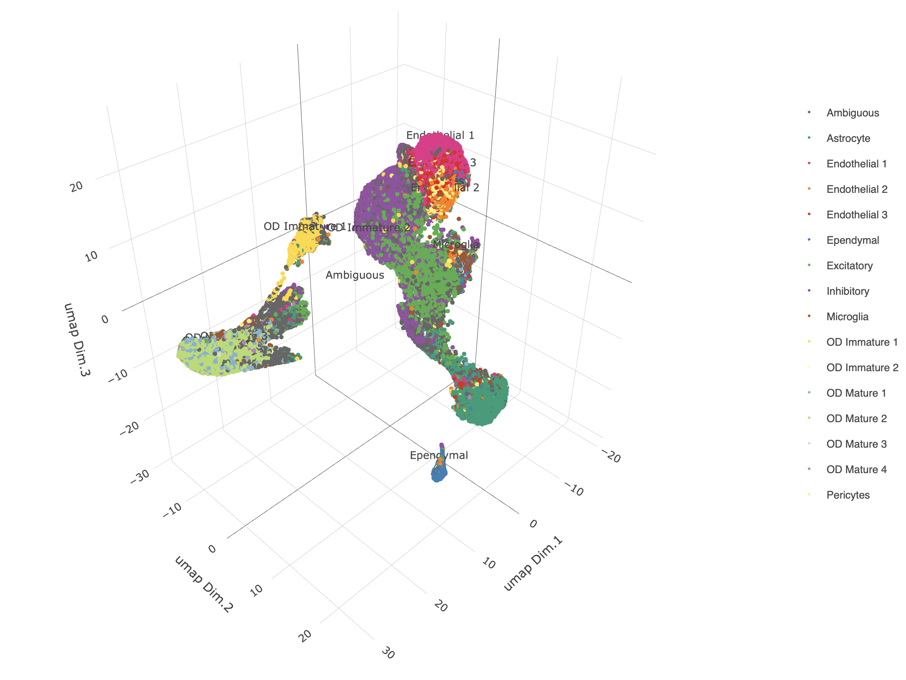
Manually assign cell types to clusters via inspection of UMAP plots. Specifically, the UMAP plots saved as “leiden_0.25.200_UMAP3D” and “Original_Cell_Types_UMAP3D” are being compared for assignment.
# Manually assign Leiden clusters to a cell type
cluster_range <- unique(testobj@cell_metadata$cell$rna$leiden_0.25.200)
# Note that cell types were condensed (i.e. "Endothelial 1", "Endothelial 2", ... were
# combined into one cell type "Endothelial")
clusters_cell_types <- c("Inhibitory", "Excitatory", "Inhibitory",
"Astrocyte", "OD Mature",
"Endothelial", "Microglia", "OD Mature",
"OD Immature", "Astrocyte",
"Ependymal", "Pericytes", "Ambiguous", "Microglia",
"Inhibitory", "Inhibitory")
names(clusters_cell_types) <- as.character(sort(cluster_range))
testobj <- annotateGiotto(gobject = testobj,
annotation_vector = clusters_cell_types,
cluster_column = "leiden_0.25.200",
name = "cell_types")
cell_types_in_plot <- c("Inhibitory", "Excitatory","OD Mature", "OD Immature",
"Astrocyte", "Microglia", "Ependymal","Endothelial",
"Pericytes", "Ambiguous")
# This Giotto function will provide a distinct color palette. Colors
# may change each time the function is run.
giotto_colors <- getDistinctColors(length(cell_types_in_plot))
names(giotto_colors) <- cell_types_in_plot
# Visualize the assigned types in the UMAP
plotUMAP_3D(testobj,
cell_color = "cell_types",
point_size = 1.5,
cell_color_code = giotto_colors,
save_param = list(save_name = "clusters_cell_types_typing_UMAP_3D"))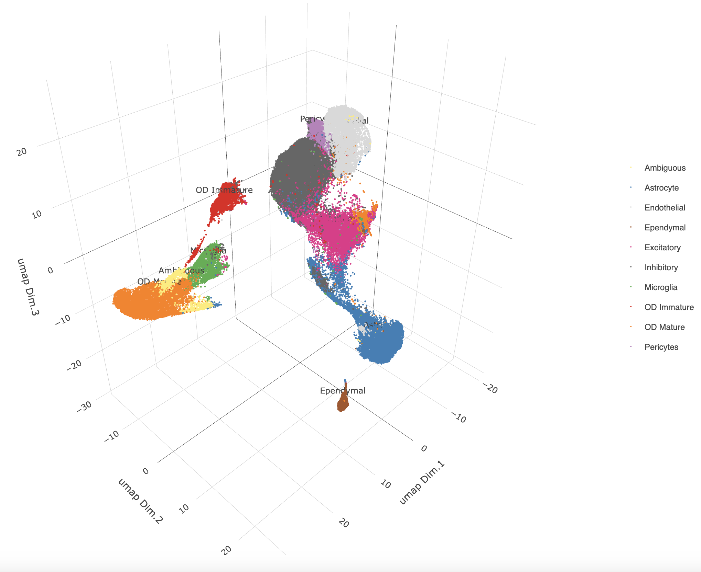
Now that each Leiden cluster has an associated cell type, cell types may be viewed in tissue in 2D and in 3D within a Spatial Plot by specifying the cell_color parameter as the name of the annotation, “cell_types”.
spatPlot2D(gobject = testobj,
point_size = 1.0,
cell_color = "cell_types",
group_by = "layer_ID",
cell_color_code = giotto_colors,
cow_n_col = 2,
group_by_subset = c(seq(260, -290, -100)))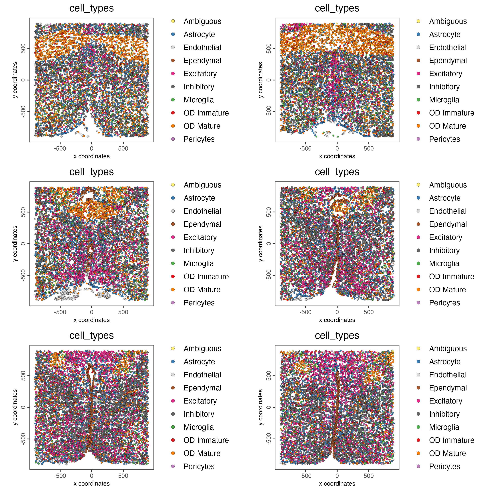
spatPlot3D(testobj,
cell_color = "cell_types",
axis_scale = "real",
sdimx = "sdimx",
sdimy = "sdimy",
sdimz = "sdimz",
show_grid = FALSE,
cell_color_code = giotto_colors)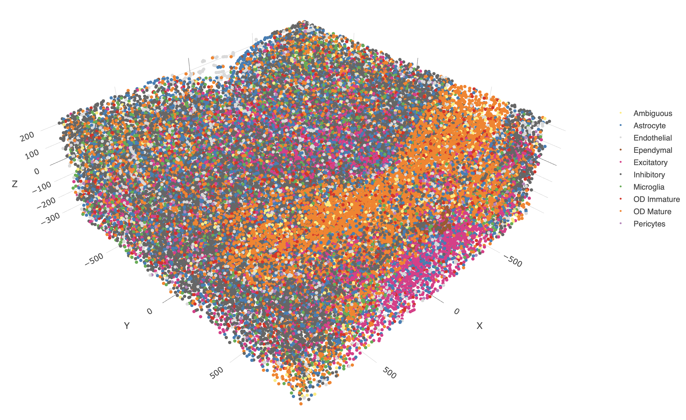
The plots may be subset by cell type in 2D and 3D.
spatPlot2D(gobject = testobj,
point_size = 1.0,
cell_color = "cell_types",
cell_color_code = giotto_colors,
select_cell_groups = c("Microglia", "Ependymal", "Endothelial"),
show_other_cells = FALSE,
group_by = "layer_ID",
cow_n_col = 2,
group_by_subset = c(seq(260, -290, -100)))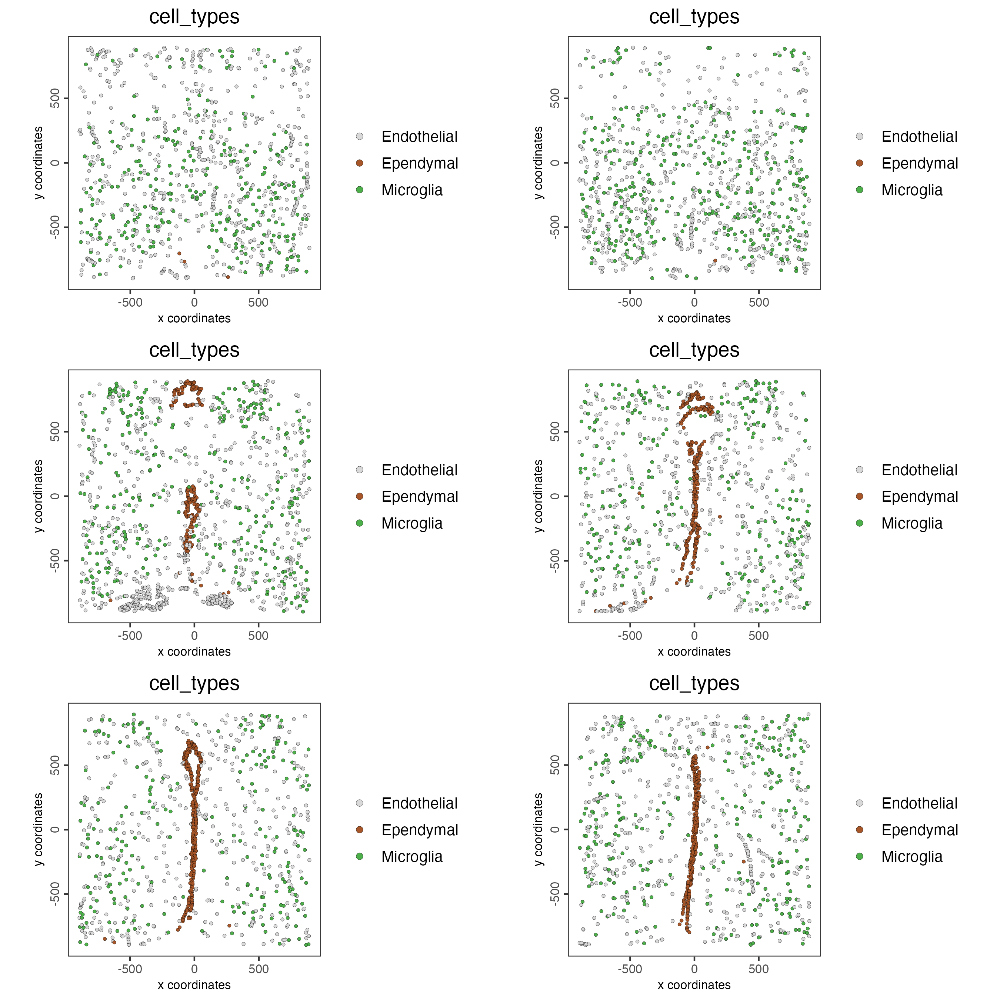
spatPlot3D(testobj,
cell_color = "cell_types",
axis_scale = "real",
sdimx = "sdimx",
sdimy = "sdimy",
sdimz = "sdimz",
show_grid = FALSE,
cell_color_code = giotto_colors,
select_cell_groups = c("Microglia", "Ependymal", "Endothelial"),
show_other_cells = FALSE)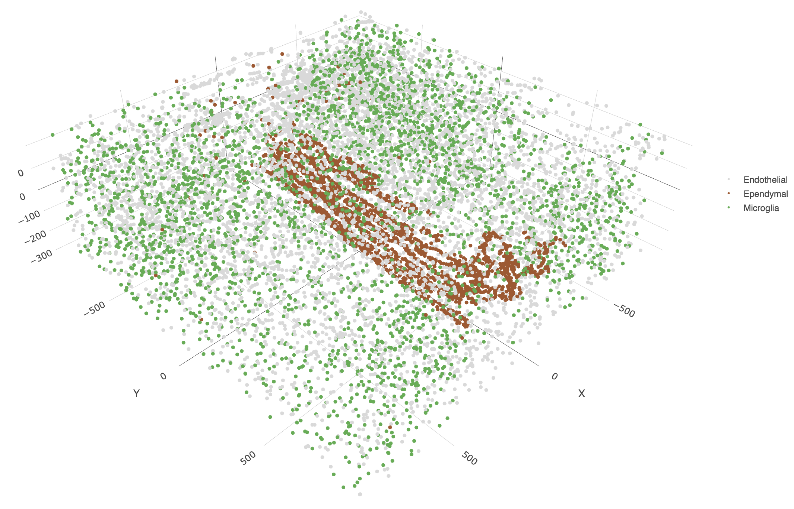
9 Visualize Cell Networks
It is preferred to use Delaunay geometry to create spatial networks. In other cases, k-nearest neighbor may be used to create a spatial network. Specifying the method parameter within createSpatialNetwork will accomplish this. By default, this function runs the Delaunay method. Here, both methods, as well as potential modifications to the k-nearest networks, will be shown.
### Spatial Networks
# The following function provides insight to the Delaunay Network. It will be shown in-console
# if this command is run as written.
plotStatDelaunayNetwork(gobject= testobj,
method = "delaunayn_geometry",
maximum_distance = 50,
show_plot = TRUE,
save_plot = FALSE)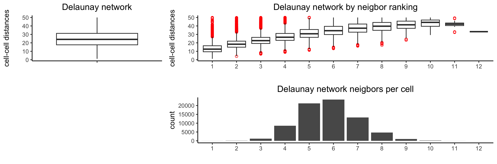
# Create Spatial Network using Delaunay geometry
testobj <- createSpatialNetwork(gobject = testobj,
delaunay_method = "delaunayn_geometry",
minimum_k = 2,
maximum_distance_delaunay = 50)
# Create Spatial Networks using k-nearest neighbor with varying specifications
testobj <- createSpatialNetwork(gobject = testobj,
method = "kNN",
k = 5,
name = "spatial_network")
testobj <- createSpatialNetwork(gobject = testobj,
method = "kNN",
k = 10,
name = "large_network")
testobj <- createSpatialNetwork(gobject = testobj,
method = "kNN",
k = 100,
maximum_distance_knn = 200,
minimum_k = 2,
name = "distance_network")
# Now, visualize the different spatial networks in one layer of the dataset
# Here layer 260 is selected, and only high expressing cells are included
cell_metadata <- getCellMetadata(testobj,
output = "data.table")
highexp_ids <- cell_metadata[layer_ID == 260][total_expr >= 100]$cell_ID
subtestobj <- subsetGiotto(testobj,
cell_ids = highexp_ids)
# Re-annotate the subset Giotto Object
subtestobj <- annotateGiotto(gobject = subtestobj,
annotation_vector = clusters_cell_types,
cluster_column = "leiden_0.25.200",
name = "cell_types")
spatPlot(gobject = subtestobj,
show_network = TRUE,
network_color = "blue",
spatial_network_name = "Delaunay_network",
point_size = 1.5,
cell_color = "cell_types",
save_param = list(save_name = "Delaunay_network_spatPlot"))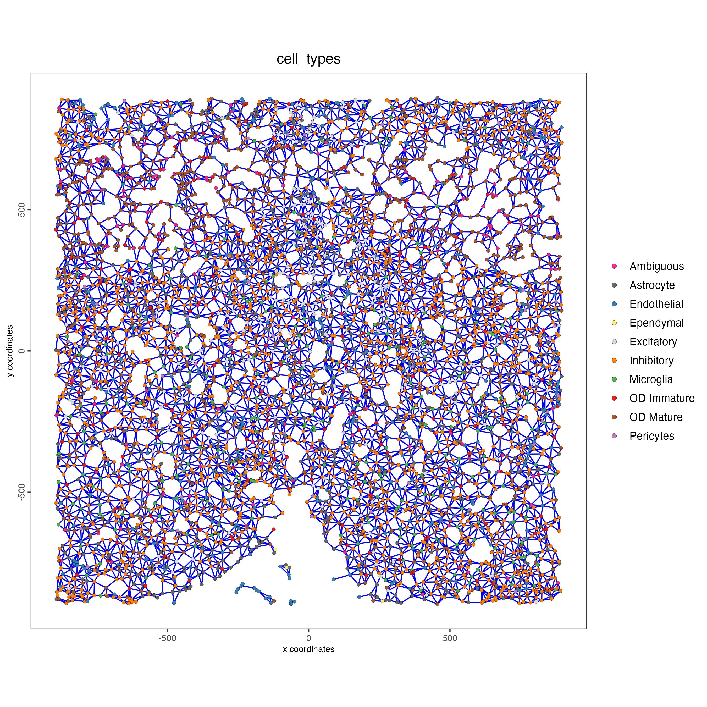
spatPlot(gobject = subtestobj,
show_network = TRUE,
network_color = "blue",
spatial_network_name = "spatial_network",
point_size = 2.5,
cell_color = "cell_types",
save_param = list(save_name = "spatial_network_spatPlot"))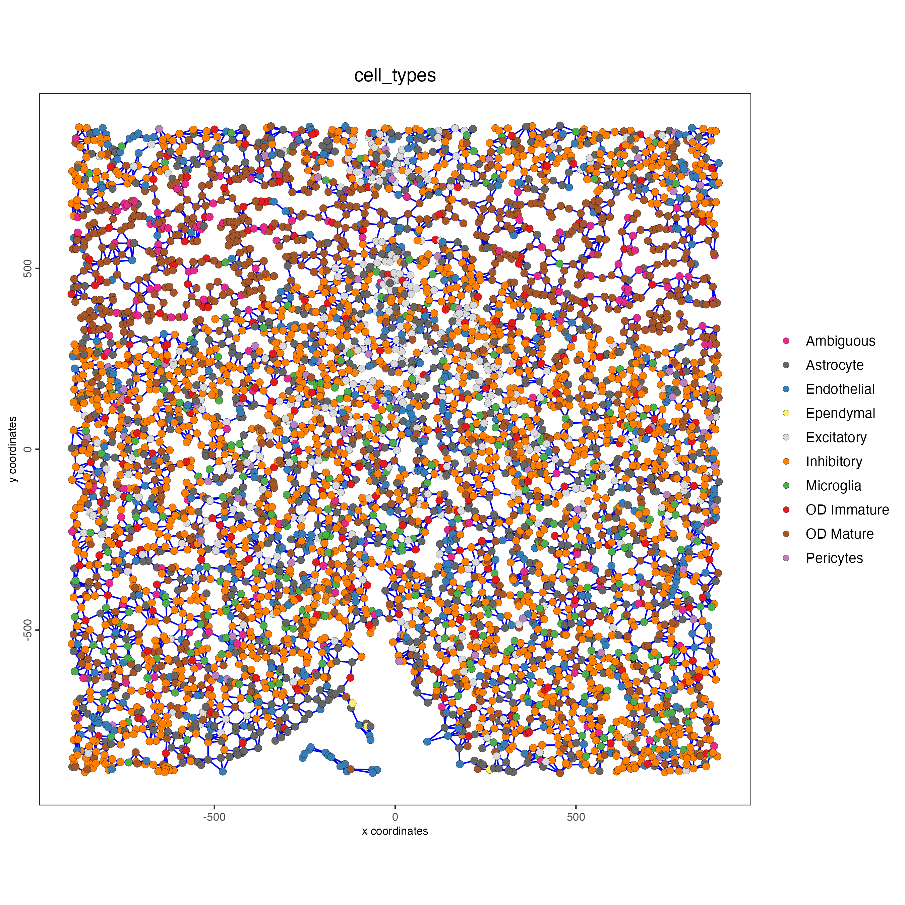
spatPlot(gobject = subtestobj,
show_network = TRUE,
network_color = "blue",
spatial_network_name = "large_network",
point_size = 2.5,
cell_color = "cell_types",
save_param = list(save_name = "large_network_spatPlot"))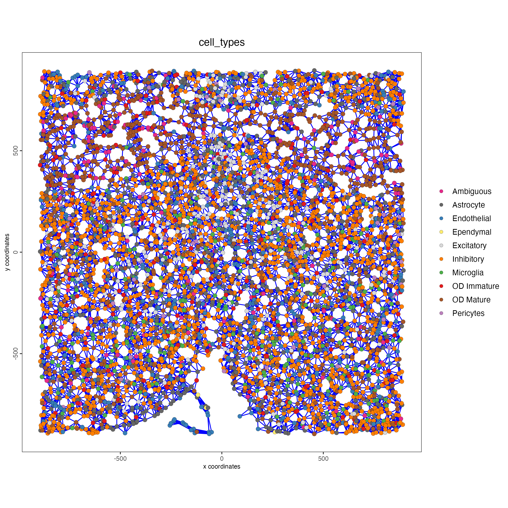
spatPlot(gobject = subtestobj,
show_network = TRUE,
network_color = "blue",
spatial_network_name = "distance_network",
point_size = 2.5,
cell_color = "cell_types",
save_param = list(save_name = "distance_network_spatPlot"))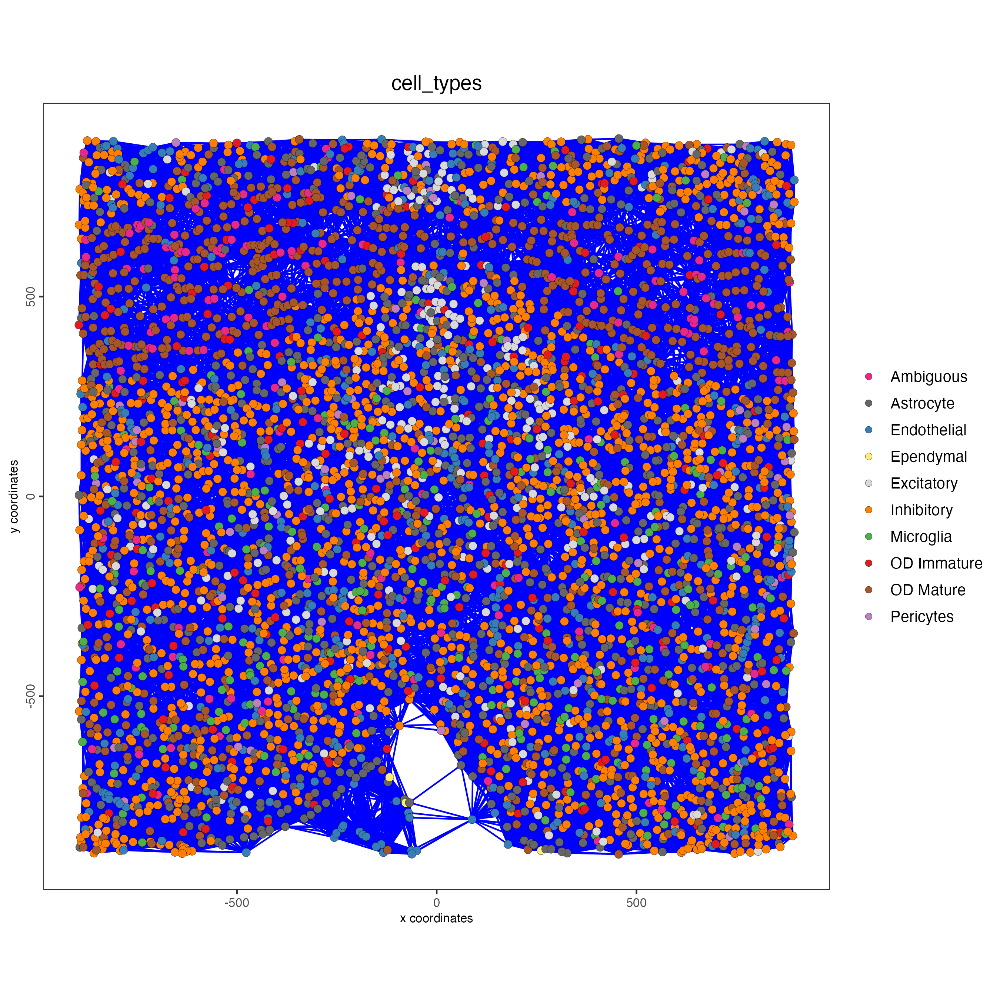
10 Session Info
R version 4.4.0 (2024-04-24)
Platform: x86_64-apple-darwin20
Running under: macOS Sonoma 14.5
Matrix products: default
BLAS: /System/Library/Frameworks/Accelerate.framework/Versions/A/Frameworks/vecLib.framework/Versions/A/libBLAS.dylib
LAPACK: /Library/Frameworks/R.framework/Versions/4.4-x86_64/Resources/lib/libRlapack.dylib; LAPACK version 3.12.0
locale:
[1] en_US.UTF-8/en_US.UTF-8/en_US.UTF-8/C/en_US.UTF-8/en_US.UTF-8
time zone: America/New_York
tzcode source: internal
attached base packages:
[1] stats graphics grDevices utils datasets methods base
other attached packages:
[1] Giotto_4.1.0 GiottoClass_0.3.4
loaded via a namespace (and not attached):
[1] RColorBrewer_1.1-3 ggdendro_0.2.0 rstudioapi_0.16.0
[4] jsonlite_1.8.8 shape_1.4.6.1 magrittr_2.0.3
[7] magick_2.8.4 farver_2.1.2 rmarkdown_2.27
[10] GlobalOptions_0.1.2 zlibbioc_1.50.0 ragg_1.3.2
[13] vctrs_0.6.5 Cairo_1.6-2 GiottoUtils_0.1.10
[16] terra_1.7-78 htmltools_0.5.8.1 S4Arrays_1.4.1
[19] SparseArray_1.4.8 htmlwidgets_1.6.4 plyr_1.8.9
[22] plotly_4.10.4 igraph_2.0.3 lifecycle_1.0.4
[25] iterators_1.0.14 pkgconfig_2.0.3 rsvd_1.0.5
[28] Matrix_1.7-0 R6_2.5.1 fastmap_1.2.0
[31] GenomeInfoDbData_1.2.12 MatrixGenerics_1.16.0 magic_1.6-1
[34] clue_0.3-65 digest_0.6.36 colorspace_2.1-1
[37] S4Vectors_0.42.1 irlba_2.3.5.1 textshaping_0.4.0
[40] crosstalk_1.2.1 GenomicRanges_1.56.1 beachmat_2.20.0
[43] labeling_0.4.3 progressr_0.14.0 fansi_1.0.6
[46] httr_1.4.7 abind_1.4-5 compiler_4.4.0
[49] withr_3.0.0 doParallel_1.0.17 backports_1.5.0
[52] BiocParallel_1.38.0 R.utils_2.12.3 MASS_7.3-61
[55] DelayedArray_0.30.1 rjson_0.2.21 gtools_3.9.5
[58] GiottoVisuals_0.2.4 tools_4.4.0 R.oo_1.26.0
[61] glue_1.7.0 dbscan_1.2-0 grid_4.4.0
[64] checkmate_2.3.2 cluster_2.1.6 reshape2_1.4.4
[67] generics_0.1.3 gtable_0.3.5 R.methodsS3_1.8.2
[70] tidyr_1.3.1 data.table_1.15.4 BiocSingular_1.20.0
[73] ScaledMatrix_1.12.0 sp_2.1-4 utf8_1.2.4
[76] XVector_0.44.0 BiocGenerics_0.50.0 RcppAnnoy_0.0.22
[79] ggrepel_0.9.5 foreach_1.5.2 pillar_1.9.0
[82] stringr_1.5.1 circlize_0.4.16 dplyr_1.1.4
[85] lattice_0.22-6 deldir_2.0-4 tidyselect_1.2.1
[88] ComplexHeatmap_2.20.0 SingleCellExperiment_1.26.0 knitr_1.48
[91] IRanges_2.38.1 SummarizedExperiment_1.34.0 scattermore_1.2
[94] stats4_4.4.0 xfun_0.46 Biobase_2.64.0
[97] matrixStats_1.3.0 stringi_1.8.4 UCSC.utils_1.0.0
[100] lazyeval_0.2.2 yaml_2.3.10 evaluate_0.24.0
[103] codetools_0.2-20 GiottoData_0.2.13 tibble_3.2.1
[106] colorRamp2_0.1.0 cli_3.6.3 uwot_0.2.2
[109] geometry_0.4.7 reticulate_1.38.0 systemfonts_1.1.0
[112] munsell_0.5.1 Rcpp_1.0.13 GenomeInfoDb_1.40.1
[115] png_0.1-8 parallel_4.4.0 ggplot2_3.5.1
[118] SpatialExperiment_1.14.0 viridisLite_0.4.2 scales_1.3.0
[121] purrr_1.0.2 crayon_1.5.3 GetoptLong_1.0.5
[124] rlang_1.1.4 cowplot_1.1.3